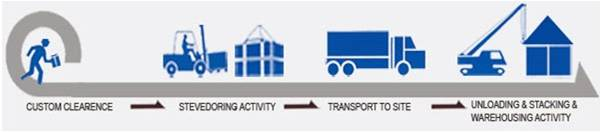

Jasa Penyewaan Alat Berat.
Pada awal tahun 1980-an, CV. Conmacher mulai mengembangkan usahanya dalam bidang jasa penyewaan alat berat. Dengan didukung oleh tenaga ahli yang berpengalaman serta memiliki jaringan yang luas, kami secara berkesinambungan dan terus menerus melakukan pengembangan bidang jasa. Setelah lebih dari 30 tahun, kini kami telah menjadi salah satu subcontractor / vendor alat berat & transportasi dengan spesialisasi di bidang Heavy Lifting & Heavy Haulage, Construction, Oil & Gas serta Port Handling Services.
OUR CUSTOMERS CV. Conmacher bekerja di seluruh sektor industri dari hulu hingga hilir. kami telah dipercaya untuk memberikan kontribusi sebagai salah satu vendor alat berat & transportasi oleh berbagai perusahaan BUMN, Swasta dan Multinational, baik dalam industri Construction, Oil & Gas, Petrochemical, Port dan lain sebagainya.
Sebagai salah satu perusahaan jasa penyewaan alat berat & transportasi terkemuka di wilayah Indonesia, CV. Conmacher didukung oleh berbagai jenis alat serta tenaga ahli yang berpengalaman. Dengan memberikan prioritas tertinggi dalam membangun budaya keselamatan kerja dan pengawasan lingkungan serta pelatihan bagi para karyawan, kami senantiasa mengembangkan sumber daya manusia agar dalam proses perencanaan hingga proses operasional berjalan dengan aman, tepat waktu dan minim resiko. Dengan mengintegrasikan antara proses dokumen Custom Clearance – Stevedoring – Transportation – Loading / Unloading – Construction, kami menawarkan solusi “One Stop Services” dalam membantu proses pekerjaan customer kami. Sehingga CV. Conmacher dapat melakukan tujuan perusahaan untuk menjadi sebagai salah satu perusahaan pelayanan jasa yang berkomitmen untuk memberikan service terbaik dalam setiap pekerjaan dengan menitikberatkan pada efisiensi dan ketepatan waktu.
